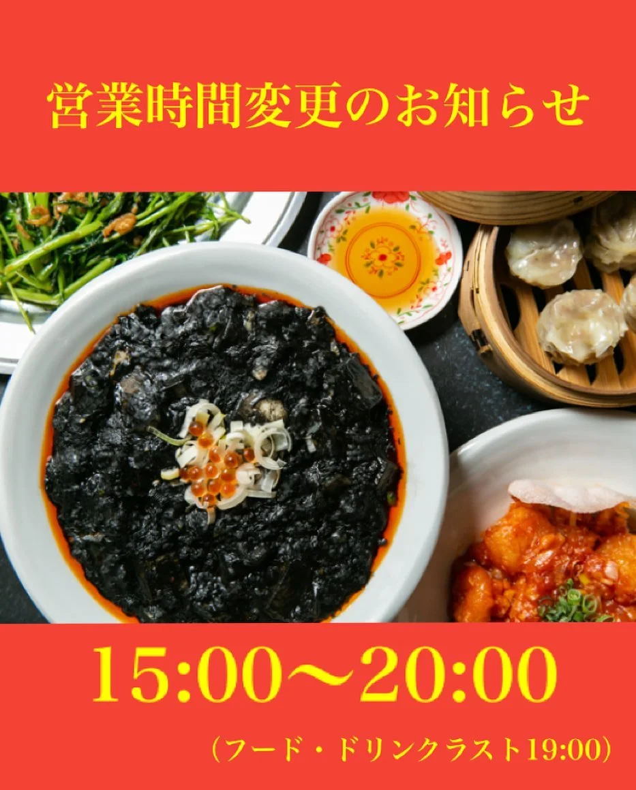

2021年4月5日
さて、本日より５月５日まで、

さて、本日より５月５日まで、 「まん延防止等重点措置」を当店も適応させていただきます。 色々と要請を守り15時から楽しくゆったり営業してますんで、音楽でもききながら中華料理を食べに来てください！！ 予約でテイクアウトも検討中です！ しかしながら、状況次第では営業時間の変更、定休日の変更、メニュー変更をさせていただきます。その場合はインスタで投稿させていただきます。ご容赦くださいませ🙇♂️ ４月は５周年祭なんですが、 なかなか難しいですね。 また今年もインスタライブになりそうです。。。 #中華バル#中華#中華料理#福島区グルメ#路地裏#B級グルメ#中国#チャイニーズ#路地裏チャイニーズ有馬#有馬#シュウマイ#焼売#餃子#点心#フォローミー#followme#パクチー#まん防